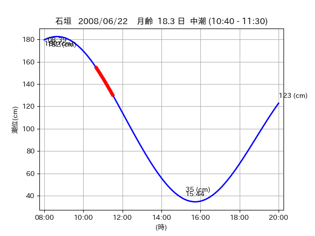
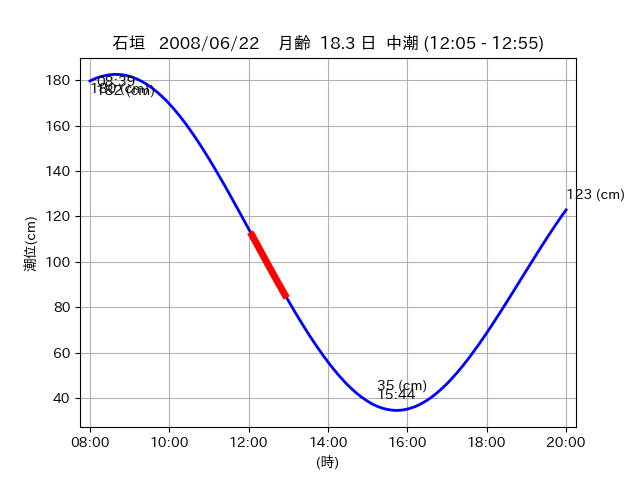
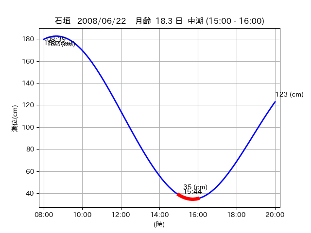

<!DOCTYPE html>
<html>
<head>
    
    <meta http-equiv="content-type" content="text/html; charset=UTF-8" />
    
        <script>
            L_NO_TOUCH = false;
            L_DISABLE_3D = false;
        </script>
    
    <style>html, body {width: 100%;height: 100%;margin: 0;padding: 0;}</style>
    <style>#map {position:absolute;top:0;bottom:0;right:0;left:0;}</style>
    <script src="https://cdn.jsdelivr.net/npm/leaflet@1.9.3/dist/leaflet.js"></script>
    <script src="https://code.jquery.com/jquery-3.7.1.min.js"></script>
    <script src="https://cdn.jsdelivr.net/npm/bootstrap@5.2.2/dist/js/bootstrap.bundle.min.js"></script>
    <script src="https://cdnjs.cloudflare.com/ajax/libs/Leaflet.awesome-markers/2.0.2/leaflet.awesome-markers.js"></script>
    <link rel="stylesheet" href="https://cdn.jsdelivr.net/npm/leaflet@1.9.3/dist/leaflet.css"/>
    <link rel="stylesheet" href="https://cdn.jsdelivr.net/npm/bootstrap@5.2.2/dist/css/bootstrap.min.css"/>
    <link rel="stylesheet" href="https://netdna.bootstrapcdn.com/bootstrap/3.0.0/css/bootstrap-glyphicons.css"/>
    <link rel="stylesheet" href="https://cdn.jsdelivr.net/npm/@fortawesome/fontawesome-free@6.2.0/css/all.min.css"/>
    <link rel="stylesheet" href="https://cdnjs.cloudflare.com/ajax/libs/Leaflet.awesome-markers/2.0.2/leaflet.awesome-markers.css"/>
    <link rel="stylesheet" href="https://cdn.jsdelivr.net/gh/python-visualization/folium/folium/templates/leaflet.awesome.rotate.min.css"/>
    
            <meta name="viewport" content="width=device-width,
                initial-scale=1.0, maximum-scale=1.0, user-scalable=no" />
            <style>
                #map_82a596e2b31a7166670dec97492f290d {
                    position: relative;
                    width: 2048.0px;
                    height: 1600.0px;
                    left: 0.0%;
                    top: 0.0%;
                }
                .leaflet-container { font-size: 1rem; }
            </style>
        
</head>
<body>
    
    
            <div class="folium-map" id="map_82a596e2b31a7166670dec97492f290d" ></div>
        
</body>
<script>
    
    
            var map_82a596e2b31a7166670dec97492f290d = L.map(
                "map_82a596e2b31a7166670dec97492f290d",
                {
                    center: [24.464, 123.841],
                    crs: L.CRS.EPSG3857,
                    ...{
  "zoom": 12,
  "zoomControl": true,
  "preferCanvas": false,
}

                }
            );

            

        
    
            var tile_layer_cd3a3a66a8152a2d68113e0373ba5236 = L.tileLayer(
                "https://cyberjapandata.gsi.go.jp/xyz/seamlessphoto/{z}/{x}/{y}.jpg",
                {
  "minZoom": 0,
  "maxZoom": 18,
  "maxNativeZoom": 18,
  "noWrap": false,
  "attribution": "\u5730\u7406\u9662\u5730\u56f3",
  "subdomains": "abc",
  "detectRetina": false,
  "tms": false,
  "opacity": 1,
}

            );
        
    
            tile_layer_cd3a3a66a8152a2d68113e0373ba5236.addTo(map_82a596e2b31a7166670dec97492f290d);
        
    
            var marker_2d5714bf9ce2d80cc692ca5f7b7c006d = L.marker(
                [24.4752, 123.8019],
                {
}
            ).addTo(map_82a596e2b31a7166670dec97492f290d);
        
    
            var icon_3af89b3732667dba40ed343416fd2c04 = L.AwesomeMarkers.icon(
                {
  "markerColor": "orange",
  "iconColor": "white",
  "icon": "info-sign",
  "prefix": "glyphicon",
  "extraClasses": "fa-rotate-0",
}
            );
        
    
        var popup_8e8658cd0139f29c62f1a9d1a53a6558 = L.popup({
  "maxWidth": "100%",
});

        
            
                var html_fa66ff437e5b8254e538afbbea06893b = $(`<div id="html_fa66ff437e5b8254e538afbbea06893b" style="width: 100.0%; height: 100.0%;"><table><tr><td></td></tr><tr><td><center>20080622 No.1 </center></table></td></tr></table</div>`)[0];
                popup_8e8658cd0139f29c62f1a9d1a53a6558.setContent(html_fa66ff437e5b8254e538afbbea06893b);
            
        

        marker_2d5714bf9ce2d80cc692ca5f7b7c006d.bindPopup(popup_8e8658cd0139f29c62f1a9d1a53a6558)
        ;

        
    
    
                marker_2d5714bf9ce2d80cc692ca5f7b7c006d.setIcon(icon_3af89b3732667dba40ed343416fd2c04);
            
    
            var poly_line_1c38f9c901fe1e51ef23a85bbe0ea3ea = L.polyline(
                [[24.4752, 123.8019], [24.4836, 123.8059]],
                {"bubblingMouseEvents": true, "color": "#FF00FF", "dashArray": null, "dashOffset": null, "fill": false, "fillColor": "#FF00FF", "fillOpacity": 0.2, "fillRule": "evenodd", "lineCap": "round", "lineJoin": "round", "noClip": false, "opacity": 1.0, "smoothFactor": 1.0, "stroke": true, "weight": 3}
            ).addTo(map_82a596e2b31a7166670dec97492f290d);
        
    
            var marker_b486fb9b356ca3262aa80d9f29a32087 = L.marker(
                [24.4795, 123.8281],
                {
}
            ).addTo(map_82a596e2b31a7166670dec97492f290d);
        
    
            var icon_e7474308382781584ee6a6f316ec24b6 = L.AwesomeMarkers.icon(
                {
  "markerColor": "orange",
  "iconColor": "white",
  "icon": "info-sign",
  "prefix": "glyphicon",
  "extraClasses": "fa-rotate-0",
}
            );
        
    
        var popup_cd9637ce9397c3537ed5205d0548176b = L.popup({
  "maxWidth": "100%",
});

        
            
                var html_e78b50b0f86ae445999f39b024f24b1a = $(`<div id="html_e78b50b0f86ae445999f39b024f24b1a" style="width: 100.0%; height: 100.0%;"><table><tr><td></td></tr><tr><td><center>20080622 No.2 </center></table></td></tr></table</div>`)[0];
                popup_cd9637ce9397c3537ed5205d0548176b.setContent(html_e78b50b0f86ae445999f39b024f24b1a);
            
        

        marker_b486fb9b356ca3262aa80d9f29a32087.bindPopup(popup_cd9637ce9397c3537ed5205d0548176b)
        ;

        
    
    
                marker_b486fb9b356ca3262aa80d9f29a32087.setIcon(icon_e7474308382781584ee6a6f316ec24b6);
            
    
            var poly_line_a05695a8f6358197127368f6ddbd0c26 = L.polyline(
                [[24.4795, 123.8281], [24.4771, 123.8338]],
                {"bubblingMouseEvents": true, "color": "#00FFFF", "dashArray": null, "dashOffset": null, "fill": false, "fillColor": "#00FFFF", "fillOpacity": 0.2, "fillRule": "evenodd", "lineCap": "round", "lineJoin": "round", "noClip": false, "opacity": 1.0, "smoothFactor": 1.0, "stroke": true, "weight": 3}
            ).addTo(map_82a596e2b31a7166670dec97492f290d);
        
    
            var marker_896484b0d7c848cf8f9de327d9f9c372 = L.marker(
                [24.4656, 123.8397],
                {
}
            ).addTo(map_82a596e2b31a7166670dec97492f290d);
        
    
            var icon_aa9be9ded012a7f82d41f3fc368c42be = L.AwesomeMarkers.icon(
                {
  "markerColor": "orange",
  "iconColor": "white",
  "icon": "info-sign",
  "prefix": "glyphicon",
  "extraClasses": "fa-rotate-0",
}
            );
        
    
        var popup_cbea10fe5e2995d9f04ffabb5fbb74ea = L.popup({
  "maxWidth": "100%",
});

        
            
                var html_457e2d3ca936b69b721f687031070353 = $(`<div id="html_457e2d3ca936b69b721f687031070353" style="width: 100.0%; height: 100.0%;"><table><tr><td></td></tr><tr><td><center>20080622 No.3 </center></table></td></tr></table</div>`)[0];
                popup_cbea10fe5e2995d9f04ffabb5fbb74ea.setContent(html_457e2d3ca936b69b721f687031070353);
            
        

        marker_896484b0d7c848cf8f9de327d9f9c372.bindPopup(popup_cbea10fe5e2995d9f04ffabb5fbb74ea)
        ;

        
    
    
                marker_896484b0d7c848cf8f9de327d9f9c372.setIcon(icon_aa9be9ded012a7f82d41f3fc368c42be);
            
    
            var poly_line_efa77ccda64cd787493ba28accb56a51 = L.polyline(
                [[24.4656, 123.8397], [24.4615, 123.8433]],
                {"bubblingMouseEvents": true, "color": "#00FFFF", "dashArray": null, "dashOffset": null, "fill": false, "fillColor": "#00FFFF", "fillOpacity": 0.2, "fillRule": "evenodd", "lineCap": "round", "lineJoin": "round", "noClip": false, "opacity": 1.0, "smoothFactor": 1.0, "stroke": true, "weight": 3}
            ).addTo(map_82a596e2b31a7166670dec97492f290d);
        
</script>
</html>